Árido es un proyecto nuevo, nortino de principio a fin. Creemos que el café de especialidad no debería quedarse solo en el sur — por eso tostamos y hacemos llegar los granos de los campos de Colombia y Etiopía directamente a las familias del norte grande.
Cada bolsa de Árido nace de la selección cuidadosa de dos orígenes que representan lo mejor del café de especialidad: los valles cafeteros de Colombia y las tierras altas de Etiopía, cuna histórica del café.
Un café de culto no se improvisa: se elige, se tuesta y se comparte con quienes saben esperar por una buena taza — en pleno desierto de Atacama.
Granos seleccionados en origen, tostados para resaltar su carácter. Esto es lo que estamos preparando para ti.
Notas dulces y equilibradas de los valles cafeteros colombianos, con cuerpo suave y un final limpio.
Perfiles florales y cítricos de las tierras altas etíopes, cuna histórica del café de especialidad.
* Precios, gramajes y formas de despacho se están definiendo — escríbenos por WhatsApp para conocer disponibilidad actual.
Escríbenos para pedidos, disponibilidad o simplemente para conversar de café.